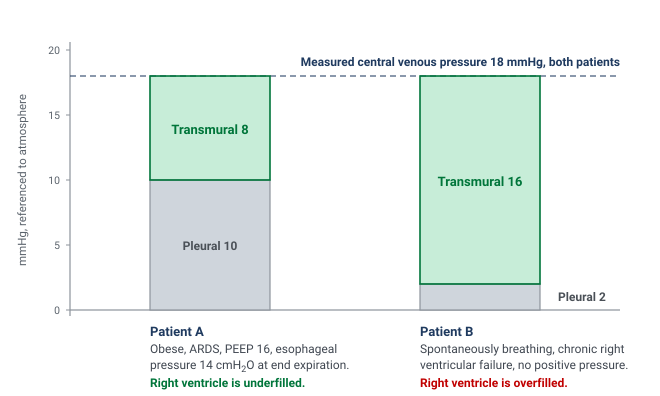
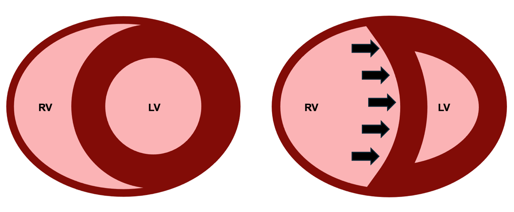
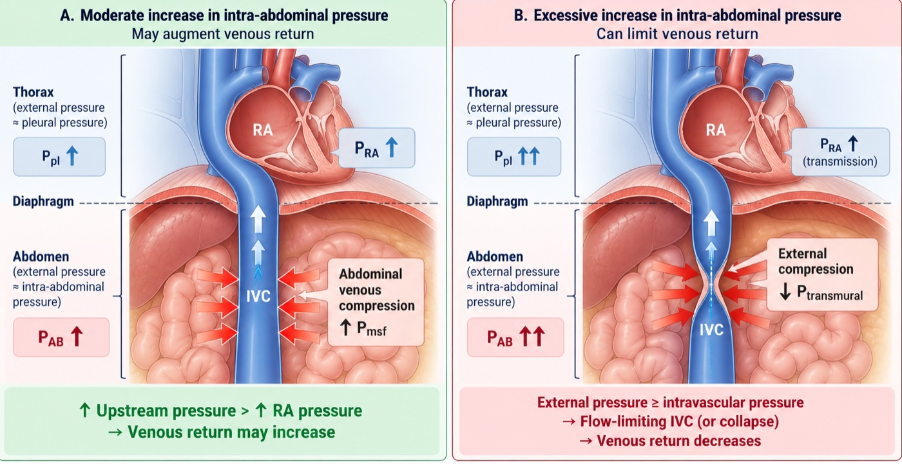
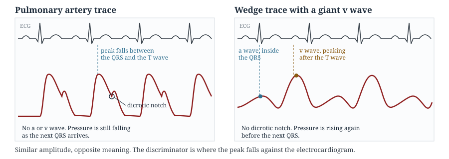
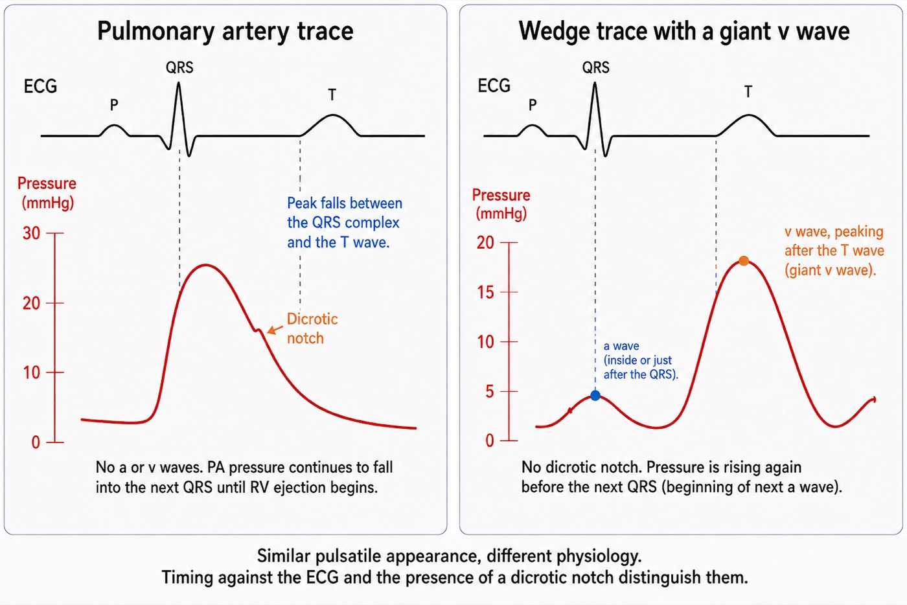

Module I17
Apply
Sixteen modules stand behind this one. I1 gave the three principles, I4 through I9 worked each interface in turn, I10 closed the loop, and I11 through I16 took apart every instrument the bedside offers. Nothing new is taught here. What this page does is put you in front of six data sets whose obvious reading is wrong, and work each one the way the physiology demands rather than the way the monitor invites.
That distinction is the entire point. The failure mode at the bedside is almost never ignorance of the physiology. It is reading a number without first asking what that number is a measurement of, and then treating the number instead of the patient. The central habit is to ask what a number means before using it to choose treatment. A central venous pressure of 18 cannot establish ventricular distension without considering cardiac timing and the pressure surrounding the heart. A pulse pressure variation of 18 percent requires a valid respiratory measurement and an explanation of why stroke volume is varying. A cardiac output of 8.7 L/min establishes substantial global flow, but cannot by itself establish adequate oxygen content, regional distribution or tissue perfusion.
N8 did a version of this at Novice depth, with one case and the algorithm in the foreground. Here the algorithm is in the background and the physiology carries the reasoning. Each case below is worked in the same order: what was measured, what the measurement genuinely licenses, what would distinguish the remaining possibilities, and what the chosen intervention should do to which curve. Where a case turns on a mechanism, the module that owns that mechanism is named and linked rather than re-explained. If you find yourself unable to follow a step, the link is the answer, not a longer paragraph here.
The order in which the questions get asked
Four questions, always in this sequence. The sequence matters more than any individual answer, because getting it out of order is how a competent clinician arrives confidently at the wrong plan.
First, is this number a number? Before a value can be interpreted it has to be a faithful representation of a pressure or a flow. I3 establishes what that requires: correct zeroing, correct leveling to the phlebostatic axis, a system that is neither underdamped nor overdamped, and a read at the right point in the respiratory cycle. I14 and I15 add the waveform-specific traps. A leveling error of a few centimetres will convert one shock phenotype into another without producing any sign that anything is wrong.
Second, what is this number a measurement of? Mean right atrial pressure describes average downstream pressure for systemic venous return. End-diastolic RAP at the z point addresses pressure at the end of right ventricular filling. Estimating the pressure distending the chamber also requires considering the pressure outside it. Similarly, mean PAWP describes pulmonary venous pressure burden, while end-diastolic PAWP may estimate LVEDP under the assumptions developed in I15. A pressure can be valid yet answer a different question from the one being asked. The catheter alone cannot tell you which role you are looking at.
Third, what would discriminate? Having named the two or three states still consistent with the data, ask which measurement would separate them and, critically, whether you can actually obtain it. This is where the tools in I11 earn their place, and where a dynamic test usually beats another static pressure.
Fourth, which physiological variable should the intervention change? Fluids, vasoactive drugs and ventilator adjustments may alter venous return and cardiac performance simultaneously, and N4 drew both while N5 mapped them onto the shock-type grid. Transfusion also changes arterial oxygen content. Predicting the direction before you act converts treatment into a test then assess flow, pressure, tissue perfusion and tolerance. A response consistent with the prediction supports the hypothesis without proving that only one mechanism or one curve changed.
Running alongside all four is an arithmetic discipline that costs thirty seconds and repeatedly rescues an interpretation. A few bedside calculations do most of the work.
A data set that does not compute is a measurement error until proven otherwise. A mean pulmonary artery pressure that does not sit between the systolic and diastolic values, a right ventricular systolic pressure that differs from the pulmonary artery systolic pressure in a patient with no pulmonic stenosis, a cardiac output by thermodilution that implies an oxygen consumption of half the expected value: each of these is telling you that something in the chain from vessel to screen is broken. I16 covers the flow measurement failures specifically, and they are usually directional rather than random, which means an unchecked number tends to be wrong in a predictable way.
Case 1. Hypotension with a central venous pressure of 18
A 68-year-old man, body mass index 38, day three of influenza pneumonia with moderate acute respiratory distress syndrome. He is passive on volume control at 6 mL/kg predicted body weight (420 mL), respiratory rate 30, PEEP 16, plateau pressure 30, FiO2 0.7 with a PaO2 of 72 mmHg. Blood pressure 84/45 (mean 58), heart rate 110, capillary refill 4 seconds, urine output 15 mL/h, lactate 3.4 mmol/L. Cardiac output by transpulmonary thermodilution 3.9 L/min, giving a cardiac index of 2.05 L/min/m2 at a body surface area of 1.90 m2, a stroke volume of 35 mL and a stroke volume index of 19 mL/m2. Mean RAP is 18 mmHg, and end-diastolic RAP at the z point is also 18 mmHg, both referenced at end expiration. Systemic vascular resistance therefore computes to 80 × (58 − 18) ÷ 3.9, which is 821 dynes·s·cm−5.
The obvious reading is that this patient is congested. A central venous pressure of 18 raises concern about venous pressure burden and fluid tolerance. However, it does not independently establish excessive RV end-diastolic volume. It also sits far above the value at which Magder and Bafaqeeh found volume responsiveness to become unlikely: in their consecutive series of patients given a volume challenge sufficient to raise the central venous pressure by at least 2 mmHg, a value above 10 mmHg marked the point beyond which a rise in cardiac output was improbable, and they proposed exactly that number as the upper limit for empiric fluid challenges. Applied without a second thought, the rule says stop fluid and start diuresis.
The rule is sound and the application is wrong, because the rule was derived in patients whose pleural pressure was near zero. The pressure that distends the right ventricle is the transmural pressure, intracavitary minus the pressure immediately outside the heart, and this patient has two reasons for that outside pressure to be high: 16 cmH2O of PEEP and a chest wall loaded by obesity. A correctly positioned and calibrated esophageal balloon reads 14 cmH2O at end expiration, approximately 10 mmHg. Using this as an estimate of the relevant surrounding pressure gives an estimated end-diastolic transmural RAP near 8 mmHg. Esophageal pressure is not a direct measurement of local pericardial pressure, and even this estimate cannot establish ventricular volume or preload responsiveness. It explains why an atmospheric-reference pressure of 18 may overstate the pressure distending the chamber.
How much airway pressure reaches the cardiovascular structures cannot be inferred from the PEEP itself. The partition depends on the relative elastance of the lung and chest wall. If the lung is very stiff, as can occur in ARDS, more of the applied airway pressure is spent distending the lung and a smaller fraction appears as pleural pressure. A stiff chest wall does the opposite: a greater fraction of airway pressure is transmitted to the pleural space. This patient has both processes competing with one another. His ARDS may reduce transmission, while his obesity may increase chest-wall elastance and therefore increase it. The net effect cannot be predicted reliably from the ventilator settings alone.
This is the physiologic basis of the transmission index introduced in I3. Teboul and colleagues first formalized the concept using the respiratory transmission of airway pressure to PAOP, and Hamzaoui and colleagues subsequently extended this principle to CVP: the respiratory change in intravascular pressure can be used to estimate how much of the airway-pressure perturbation is reaching the intrathoracic vascular compartment. The important lesson here is not a universal correction factor but that transmission is patient-specific. In this patient, the esophageal balloon provides the more direct estimate of surrounding pressure and explains why an atmospheric-reference RAP of 18 mmHg can coexist with a much lower transmural distending pressure.

![Bar chart and paired heart cross sections for the same two patients. Patient A, obese with ARDS on PEEP 16, has an esophageal pressure of 14 cmH2O at end expiration: the 18 mmHg central venous pressure is built from 10 mmHg of pleural pressure and 8 mmHg of transmural pressure, and the right ventricle is labelled underfilled. Patient B, spontaneously breathing with chronic right ventricular failure and no positive pressure, has 2 mmHg of pleural pressure and 16 mmHg of transmural pressure, and the right ventricle is labelled overfilled.](img/i17-same-cvp-two-patients-gustavo.jpg)
What would discriminate, if no esophageal balloon is available? Two things. The first is the respiratory swing in the central venous pressure trace itself, which I14 works through. A respiratory change in CVP reflects transmission of the respiratory pressure perturbation into the intrathoracic vascular compartment, and the transmission-index approach introduced in I3 provides a more formal way of relating that vascular pressure change to the applied airway-pressure swing. A larger transmitted fraction would support an important surrounding-pressure contribution to the measured RAP, whereas a smaller fraction would suggest that more of the applied airway pressure is being spent across the lung as transpulmonary pressure. That distinction is particularly relevant here because ARDS and obesity push transmission in opposite directions: increased lung elastance tends to reduce transmission, while increased chest-wall elastance tends to increase it.
The second is simply to change the airway pressure and watch the circulation respond. For example, a fall in RAP accompanied by a rise in cardiac output during a PEEP reduction of about 5 cmH2O would support an adverse hemodynamic contribution from the previous ventilator setting. The measured RAP was genuinely intravascular, though part of its elevation may nevertheless have reflected transmitted surrounding pressure. The response should not be overinterpreted, however, because changing PEEP simultaneously alters pleural pressure, venous flow limitation, mean systemic filling pressure, RV afterload and ventricular interaction. It therefore demonstrates that the ventilator was contributing to the hemodynamic state, but does not by itself identify which of those mechanisms dominated.
Which curve should the intervention move? Not the venous return curve first. The dominant abnormality is that positive pressure has raised the pressure surrounding the great veins, which I8 shows moves the flow-limiting waterfall to a positive right atrial pressure and shortens the usable portion of the venous return curve, while I12 works out the same breath's effect on both ventricles. The first move is therefore to reduce the load: minimise the driving pressure, take PEEP to the lowest value that holds oxygenation, and consider proning. Esophageal pressure guidance is the formal version of this reasoning, and in Talmor's 61-patient pilot trial, setting PEEP to keep transpulmonary pressure positive improved both oxygenation and respiratory system compliance against the standard-of-care table. The reasoning supports an individualised test, not a universal low-PEEP target: a larger confirmatory trial using the same esophageal-pressure-guided strategy did not find a difference in its primary composite outcome against empirical high PEEP.
Only after that, if perfusion is still inadequate, does a volume challenge become a reasonable test rather than a reflex. Here 250 mL of crystalloid over ten minutes raised the central venous pressure from 18 to 20.5 mmHg, which satisfies Magder's criterion that the challenge was actually delivered, and raised cardiac output from 3.9 to 4.6 L/min, an 18 percent rise. Mean pressure rose to 66 and resistance fell slightly to 791 dynes·s·cm−5. The patient was preload responsive at a central venous pressure of 18. A positive answer is not a mandate to keep going, and the second bolus deserves the same test as the first. This demonstrates a flow response to that challenge despite a high initial RAP. The RAP rise alone does not measure the change in Pms. Before any further bolus, reassess CRT, oxygenation, congestion and whether additional flow is still needed. The supplied data establish responsiveness, not sustained clinical benefit.
Case 2. A pulse pressure variation of 18 percent that fluid will not fix
A 54-year-old man, day two of septic shock from necrotising pneumonia, deeply sedated and making no respiratory effort, in sinus rhythm at 105. Volume control at 6 mL/kg predicted body weight (410 mL), respiratory rate 26, PEEP 12, plateau 30, so a driving pressure of 18 cmH2O. PaO2/FiO2 120, PaCO2 58 mmHg, pH 7.24. Norepinephrine 0.35 mcg/kg/min. Blood pressure 86/48 (mean 61), lactate 4.1 mmol/L. The monitor displays a pulse pressure variation of 18 percent.
A pulmonary artery catheter is in place. Right atrial pressure 18 mmHg, pulmonary artery 48/24 with a mean of 32, occlusion pressure 9 mmHg, cardiac output 5.6 L/min, cardiac index 2.87 L/min/m2 at a body surface area of 1.95 m2, stroke volume 53 mL, stroke volume index 27 mL/m2, mixed venous saturation 61 percent. Systemic vascular resistance is 80 × (61 − 18) ÷ 5.6, which is 614 dynes·s·cm−5. Pulmonary vascular resistance is (32 − 9) ÷ 5.6, which is 4.1 Wood units.
The obvious reading is that a septic patient with a pulse pressure variation of 18 percent, passive on the ventilator and in sinus rhythm, is fluid responsive and should be given fluid, however passivity and sinus rhythm establish only part of the required conditions. Tidal volume is low, respiratory system compliance is approximately 410/18 = 23 mL/cmH2O, and the RV is exposed to substantial pulmonary vascular loading. I13 requires the respiratory signal to be interpreted through all of these conditions before it becomes an argument for fluid.
Three features of the data set say otherwise, and all three point at the same chamber. The first is that the right atrial pressure of 18 exceeds the occlusion pressure of 9. In a passive, supine patient with a correctly levelled transducer, a right-sided filling pressure that sits twice the left-sided one is close to diagnostic of a right ventricle that is the limiting chamber. The second is the PAPi, the pulmonary artery pulse pressure divided by the right atrial pressure, here 24 ÷ 18, which is 1.33. Korabathina and colleagues introduced that ratio in acute inferior myocardial infarction precisely because it captures a right ventricle that can no longer generate pulsatility against its filling pressure. The third is the epidemiology. Mekontso Dessap and colleagues studied 752 patients with moderate to severe acute respiratory distress syndrome under protective ventilation and found acute cor pulmonale in 22 percent, with four independent predictors: pneumonia as the cause, a driving pressure of 18 cmH2O or more, a PaO2/FiO2 ratio under 150, and a PaCO2 of 48 mmHg or more. This patient has all four.
Echocardiography settles it. The right ventricular to left ventricular end-diastolic area ratio is 1.1, which is severe dilatation by that study's definition, with systolic septal flattening. Tricuspid annular plane systolic excursion is 12 mm and the tricuspid annular peak systolic velocity is 0.11 m/s. These are load-dependent measures of RV performance, not isolated measurements of contractility. That last number is the specific discriminator: Mahjoub and colleagues studied 35 ventilated patients who all had a pulse pressure variation above 12 percent and gave every one of them 500 mL of colloid. A third of them, 12 of 35, did not respond, and a tricuspid annular peak systolic velocity below 0.15 m/s separated the false positives from the true positives with 91 percent sensitivity and 83 percent specificity. Here, the combined waveform, respiratory and imaging findings make RV afterload sensitivity a compelling explanation for the respiratory variation.

The mechanism explains the false positive. I12 sets out the five things a positive pressure breath does, and I13 follows the chain from a cyclic change in volume to a visible change in arterial pressure. When the right ventricle is operating against a load it can barely overcome, each inspiration adds transmural pulmonary vascular resistance to a ventricle with no reserve, and right ventricular output falls sharply during insufflation for reasons that have nothing to do with how much volume is in the reservoir. Two beats later the left ventricle ejects less, the arterial pressure swings, and the monitor reports a number that looks like preload responsiveness. Filling this ventricle further dilates it, worsens septal shift, and reduces left ventricular filling.
The first intervention should improve the RV cardiac function relationship by reducing the load against which it is ejecting, rather than shifting the venous return curve to the right with more volume. An inodilator is not the first move here because the dominant problem appears to be an acutely increased RV load rather than insufficient contractile stimulation. In a vasoplegic patient already requiring substantial norepinephrine, systemic inodilation may also compromise perfusion pressure. The first test of the hypothesis is therefore to reduce pulmonary vascular and ventilator-imposed RV load while preserving systemic pressure. If RV output remained inadequate despite those measures and adequate coronary perfusion pressure, adding carefully titrated inotropic support, such as dobutamine, would become reasonable. Respiratory rate went from 26 to 32 to correct the respiratory acidosis, tidal volume to 5 mL/kg with PEEP reduced to 10, giving a plateau of 24 and a driving pressure of 14, and the patient was proned. Six hours later: PaCO2 44, pH 7.36, right atrial pressure 13, pulmonary artery 40/18 with a mean of 25, occlusion pressure 9, cardiac output 6.4 L/min, mean arterial pressure 68, norepinephrine down to 0.18 mcg/kg/min. Resistance recomputes to 80 × (68 − 13) ÷ 6.4, which is 688 dynes·s·cm−5, and pulmonary vascular resistance to (25 − 9) ÷ 6.4, which is 2.5 Wood units. Filling pressure fell, flow rose. That combination is the signature of a cardiac function curve that has moved up, and it cannot be produced by giving volume.
One footnote with teeth. PPV is now 8 percent, but HR 96 and respiratory rate 32 give only 3 beats per breath. This is below the approximately 3.6 ratio identified in the cited physiological study. Tidal volume, PEEP, position, vasoactive dose and RV loading have also changed. The lower PPV cannot independently demonstrate corrected preload status or absence of responsiveness. Follow the measured flow, RV findings and tissue-perfusion response.
Case 3. A pulse pressure variation that is not a measurement at all
A 58-year-old woman, twelve hours after emergency laparotomy for perforated diverticulitis, closed under tension. She is on pressure support with variable spontaneous effort, tidal volumes between 320 and 480 mL, and has gone into atrial fibrillation at 128. Blood pressure 96/45 (mean 62), central venous pressure 11 mmHg, bladder pressure 22 mmHg, urine output 8 mL/h, lactate 2.9 mmol/L. The monitor displays a pulse pressure variation of 21 percent.
Beat-to-beat respiratory indices are unreliable during this arrhythmia, and pulse-contour estimates require caution. Flow is assessed by echocardiography. An LVOT diameter of 2.0 cm gives CSA 3.14 cm2. VTI averaged over ten representative beats is 11.0 cm, giving SV 34.5 mL. At HR 128, CO is approximately 4.4 L/min and CI 2.4 L/min/m2 at BSA 1.85 m2. SVR is 927 dynes·s·cm−5. During subsequent tests, keep LVOT sampling consistent, average enough beats and record HR: VTI tracks SV when LVOT area is stable, whereas CO also depends on HR.
PPV 21 percent cannot be interpreted as a fluid-responsiveness result here. Irregular rhythm and variable spontaneous effort invalidate the inference, while abdominal pressure and respiratory mechanics further alter the stimulus. This is different from landing in a grey zone within a valid test. I13 shows that grey zones vary by population, and 9 to 13 percent is not a universal ICU interval. Neither a high displayed SVV nor a ratio of these invalid indices would rescue the interpretation. De Backer and colleagues found the index to classify correctly. In their sixty-patient study, a 12 percent cut-off classified 88 percent of patients correctly when tidal volume was at least 8 mL/kg and only 51 percent when it was below that, which is indistinguishable from a coin.
Mahjoub and colleagues' point-prevalence study illustrates how restrictive the traditional validity conditions can be: only six of 311 ICU patients, and five of 170 with an arterial line, satisfied all six criteria at that assessment. Those numbers describe that cohort and those criteria, they are not a universal estimate of the proportion of ICU patients in whom every dynamic test is useful.

PLR assessed through flow can be useful during spontaneous breathing and arrhythmia if acquisition is adequate. However, the bladder pressure of 22 mmHg introduces another limitation: intra-abdominal hypertension can impede the blood transfer and cause a false-negative PLR. Here VTI rises from 11.0 to 11.6 cm, approximately 5 percent. This is not a convincing positive response, but it cannot conclusively exclude responsiveness under these abdominal conditions. A small, carefully monitored fluid challenge may provide additional information if its potential benefit justifies the risk, decompression should not be delayed merely to complete testing.
A 250 mL challenge raises mean CVP from 11 to 15 mmHg while VTI changes from 11.0 to 11.2 cm. Assuming all acquisition conditions remain stable, there is no convincing increase in measured forward flow. The pressure rise does not directly demonstrate how far the venous-return curve moved or how much Pms increased. Together with abdominal hypertension and organ dysfunction, this response argues against continuing empiric boluses.
A sustained bladder pressure of 22 mmHg is grade III intra-abdominal hypertension. When associated with new organ dysfunction attributable to the pressure, an intra-abdominal pressure above 20 mmHg meets the definition of abdominal compartment syndrome. The postoperative timing, oliguria and circulatory findings make this an urgent possibility. Nasogastric decompression, deeper sedation with a period of neuromuscular blockade, and drainage of 1.2 L of ascites bring back bladder pressure to 12 mmHg. Mean arterial pressure rose to 72, central venous pressure fell to 8, velocity-time integral rose to 14.8 cm at a rate of 118, giving a stroke volume of 46 mL and a cardiac output of 5.5 L/min.
Now recompute the resistance: 80 × (72 − 8) ÷ 5.5, which is 931 dynes·s·cm−5, compared with 927 before. Calculated SVR therefore remained essentially unchanged while MAP rose by 10 mmHg and flow rose by 25 percent. That pattern strongly supports relief of a dominant return-side constraint without evidence of a major change in the conventional resistive term, neither the initial blood pressure nor the displayed pulse pressure variation could have shown that.
Case 4. High cardiac output with persistent vasoplegia and abnormal tissue perfusion
A 61-year-old man with alcoholic cirrhosis was admitted three days ago with a bleeding varix, which was banded, and received transfusion. He is now febrile with a rising white count and suspected sepsis. He is awake but confused and receives norepinephrine 0.28 mcg/kg/min. Blood pressure is 102/45 mmHg (mean 64), heart rate 112, capillary refill time 5 seconds, with mottling over both knees, urine output 10 mL/h and lactate 6.2 mmol/L. Hemoglobin is 8.2 g/dL, arterial saturation 96 percent, ScvO2 79 percent and the central venous-to-arterial PCO2 gap 9 mmHg. Mean RAP is 10 mmHg. Echocardiography gives a cardiac output of 8.7 L/min, cardiac index 4.6 L/min/m2 and stroke volume approximately 78 mL. Calculated SVR is 497 dynes·s·cm−5.
The obvious reading is reassuring: cardiac output is high and ScvO2 is 79 percent. The patient, however, is still poorly perfused. Capillary refill remains markedly prolonged, the knees are mottled, urine output is minimal and mental status is abnormal. The high cardiac output therefore cannot be used as evidence that the circulation has been adequately corrected.
The arterial pressure adds another clue. Diastolic pressure remains only 45 mmHg despite a heart rate of 112, giving a diastolic shock index of 2.49. Together with the low calculated SVR and the clinical context, this supports substantial residual vasodilation. DSI is not a norepinephrine target by itself, but it helps identify a circulation in which inadequate vascular tone remains a plausible and modifiable contributor to poor perfusion.
There is also a second limitation that the cardiac output cannot compensate for completely: oxygen content, which N2 sets up and I16 operationalises. With a hemoglobin of 8.2 g/dL and arterial saturation of 96 percent, CaO2 is approximately 10.55 mL/dL. Global oxygen delivery is therefore approximately 918 mL/min, or 483 mL/min/m2. The high flow is partly compensating for reduced oxygen content. Whether that delivery is sufficient depends on the patient's metabolic demand and, ultimately, whether the delivered oxygen reaches tissue capable of extracting and using it.
The ScvO2 of 79 percent does not settle that question. Using the central venous sample gives an estimated extraction of only about 18 percent, but a high central venous saturation can coexist with abnormal regional perfusion or impaired oxygen extraction. The widened PCO2 gap provides an additional warning that global flow and tissue metabolism may not be matching normally. The important bedside point is the discordance: high global flow and high ScvO2 are occurring alongside unequivocally abnormal peripheral perfusion.
Why should the ratio rise during inadequate oxygen delivery? When oxygen delivery becomes insufficient for metabolic demand, oxygen consumption can no longer increase proportionally and non-oxidative ATP production becomes increasingly important. The accompanying proton burden must be buffered. Bicarbonate provides an important buffer:
The difficulty at the bedside is that we usually measure PCO2 rather than CO2 content. Pressure and content are related but are not interchangeable. Their relationship depends on pH, hemoglobin, oxygen saturation and temperature through the CO2 dissociation curve and the Haldane effect.
In this patient:
Ospina-Tascón and colleagues used calculated arterial and mixed-venous CO2 contents to examine the content-derived ratio more directly. Reproducing that calculation requires the variables necessary to estimate CO2 content, so no numerical content ratio is claimed here.
The mechanistic lesson is therefore not simply that “the CO2 gap is high.” It is that, when oxygen delivery becomes insufficient relative to demand, oxygen consumption becomes constrained while buffering of metabolically generated protons can add CO2 independently of aerobic oxidative metabolism. The CO2/O2 relationship is an attempt to detect that divergence.
This should not yet be labelled isolated microcirculatory failure. Vascular tone remains abnormal and potentially correctable. Sepsis-associated microvascular heterogeneity may contribute, but the first question is whether improving the remaining macrocirculatory abnormality improves the tissue signal.
The next hemodynamic intervention is therefore a modest, closely observed increase in norepinephrine while infection treatment and source evaluation proceed. Norepinephrine may increase arterial pressure and diastolic perfusion pressure while venoconstriction recruits unstressed blood into the stressed compartment. The objective is not to normalize SVR or DSI. The test is whether capillary refill, measured flow, arterial pressure and the other perfusion findings improve without excessive vasoconstriction, falling cardiac output or worsening congestion.
Before giving additional volume, preload responsiveness is tested. Passive leg raising changes VTI by only 4 percent. With adequate technique and stable heart rate, there is therefore no convincing evidence that another fluid bolus will increase flow in the patient's current physiologic state. Vasoplegia may increase venous capacity, but it does not make fluid responsiveness automatic. That distinction matters because treatment can change the state being tested. Increasing norepinephrine changes vascular tone and venous capacitance, intubation changes intrathoracic pressure and ventricular loading. A negative passive leg raise should prevent reflexive fluid administration in the current state, but it should not be carried forward indefinitely after the circulation has changed.
Positive-pressure inspiration perturbs venous return and right-ventricular loading. A few beats later left-ventricular stroke volume changes. SVV stops there: it reports how much ejected volume changed.
PPV adds another step. The change in stroke volume must be transformed by the arterial system into a change in pulse pressure:
This is why a PPV of 7 percent cannot be read here as “stroke volume is stable.” SVV says that stroke volume is varying substantially. The low EaDyn tells us that those changes in flow are being translated inefficiently into changes in arterial pressure.
But EaDyn does not tell us why with a single number. It is not SVR, arterial compliance, or ventricular-arterial coupling measured directly. It is a dynamic relationship between a flow variation and the pressure variation generated from it.
Most importantly, these measurements were obtained after the patient's physiology changed. Intubation altered pleural pressure and ventricular loading, norepinephrine altered arterial tone and venous capacitance. A prior negative passive-leg-raise result therefore cannot simply be carried forward. The new state requires a new test of responsiveness. And even if responsiveness is now demonstrated, two questions remain: does the patient need more flow, and can the circulation tolerate the volume required to obtain it?
Anemia creates a separate therapeutic question. A hemoglobin of 8.2 g/dL does not by itself mandate transfusion. If persistent hypoperfusion, recurrent bleeding or other clinical considerations later justify RBC transfusion, its effect on oxygen delivery can occur through two different terms:
Transfusion raises hemoglobin and therefore CaO2. Because RBCs also add intravascular volume, they may additionally raise venous return and cardiac output if the patient is preload responsive at that later moment. Those are separate hypotheses and should be tested separately. Improvement in MAP alone would not establish that the intervention helped, reassess hemoglobin, stroke volume or cardiac output, capillary refill, oxygenation and congestion.
Norepinephrine changes the same system from another direction. By constricting capacitance veins, it can recruit blood from the unstressed into the stressed compartment without adding external volume. In the study by Adda and colleagues, with Monnet as senior author, passive leg raising produced a larger increase in estimated mean systemic filling pressure at higher norepinephrine doses. The implication is not that norepinephrine makes transfusion beneficial, it is that vascular tone changes the pressure consequence of adding or redistributing intravascular volume.
The same transfusion can therefore behave differently before and after vasopressor adjustment. In one state, most of the added volume may enlarge stressed volume and increase the venous-return gradient. In another, right atrial pressure may rise almost as much as Pms, so the gradient changes little. And if the heart is already on the flat portion of its function curve, additional venous return may raise filling pressure without increasing flow at all.
That gives transfusion two separable pathways to oxygen delivery:
The sequence is therefore straightforward: treat the infection, test correction of the persistent hemodynamic disturbance, reassess whether additional flow is needed and recruitable, and address oxygen content individually when clinically justified. The target is not a chosen cardiac output, hemoglobin, lactate or MAP. It is a favorable tissue-perfusion response with acceptable tolerance. This is the same lesson developed throughout the pathway: a cardiac output is useful because it tells us what the circulation is doing, not because the number itself is the endpoint.
Case 5. A right ventricle failing against its load
A 65-year-old woman with idiopathic pulmonary arterial hypertension, admitted five days ago for initiation of intravenous treprostinil and diuresis. She is net negative 7 L and has done well. This morning the treprostinil was increased to 18 ng/kg/min, and a few hours later she became hypotensive. The dose was reduced to 14 ng/kg/min without improvement. Weight 65 kg, body surface area 1.70 m2. Blood pressure 85/54 (mean 64), heart rate 103, saturation 91 percent, lungs clear, trace peripheral edema, capillary refill 3 seconds, lactate 2.5 mmol/L, creatinine 1.6 mg/dL.
Her pulmonary artery catheter reads: right atrial pressure 16 mmHg, pulmonary artery 58/26 with a mean of 37, occlusion pressure 9 mmHg, cardiac output 2.9 L/min, cardiac index 1.71 L/min/m2, stroke volume 28 mL, stroke volume index 16.6 mL/m2, mixed venous saturation 48 percent, hemoglobin 12.1 g/dL. Systemic vascular resistance is 80 × (64 − 16) ÷ 2.9, which is 1324 dynes·s·cm−5. Pulmonary vascular resistance is (37 − 9) ÷ 2.9, which is 9.7 Wood units. Cardiac power output is 64 × 2.9 ÷ 451, which is 0.41 W.
The combination of low CO, elevated RAP and high pulmonary pressure is concerning, but changes from the patient's baseline are essential. Overdiuresis, prostacyclin-associated systemic vasodilation and deterioration in RV performance may coexist. A recent net fluid loss does not establish that giving fluid back will improve forward flow, and a high RAP does not independently resolve the mechanism. Review the trends and echocardiography, then select a dynamic assessment the patient can undergo.
Which forces a dynamic test, and the patient is spontaneously breathing, so the ventilator-derived indices are unavailable. A passive leg raise raised the right atrial pressure from 16 to 19 mmHg and moved the velocity-time integral from 11.2 to 11.5 cm, with cardiac output going from 2.9 to 3.0 L/min. The rise in right atrial pressure is the informative half. It says the manoeuvre worked, the venous return curve did shift to the right, and mean systemic filling pressure did increase. The flat flow response says the cardiac function curve she is sitting on cannot use it.
![Plot of cardiac output against right atrial pressure. A blue solid venous return line falls from upper left to reach zero flow at a right atrial pressure of 22, and a blue dashed line parallel to it reaches zero at 25. A red solid curve rises steeply then flattens near 3 L per minute, and a red dashed curve above it flattens near 5 L per minute. Point a sits at right atrial pressure 16 and output 2.9 where the solid lines cross. Point b sits at 19 and 3.0 where the dashed venous return line crosses the same flat red curve. Point c sits at 13 and 4.3 where the solid venous return line crosses the raised red curve.](img/i17-rv-flat-curve.svg)
The remaining question is why the ventricle is failing, and the answer changes the drug order. This is not primarily a contractility problem. The load has not changed much, but the ventricle's ability to work against it has: right ventricular stroke work index, 0.0136 × (37 − 16) × 16.6, is 4.7 g·m/m2, and the pulmonary artery pulsatility index, 32 ÷ 16, is 2.0. I9 traces the spiral by which a pressure-loaded right ventricle loses coronary perfusion. The right ventricular free wall normally perfuses through both systole and diastole because its cavity pressure is low. Once right ventricular systolic pressure approaches aortic systolic pressure, the systolic component of that gradient disappears and the ventricle becomes dependent on diastolic perfusion in the same way the left ventricle is, at exactly the moment its oxygen demand is highest. In this patient that is a plausible contributor, not a mechanism established solely by RVSWI or PAPi.
In this hypotensive patient, pressure support is established before assessing the need for additional inotropic stimulation. Norepinephrine 0.08 mcg/kg/min raises MAP from 64 to 78, with RAP 15 and CO 3.4 L/min, calculated SVR is 1482 dynes·s·cm−5. The response may reflect improved coronary perfusion, beta-1 effects and changes in venous return and loading. It cannot isolate one mechanism.
Dobutamine 5 mcg/kg/min is then added. MAP is 74, RAP 13, PA pressure 55/25 (mean 35), PAWP 9, CO 4.3 L/min and CI approximately 2.5 L/min/m2. Reported SVI is approximately 26 mL/m2, the contemporaneous HR should accompany it because SVI cannot be recalculated from CO and BSA alone. Using the supplied SVI, RVSWI is approximately 7.8 g·m/m2, SVR is 1135 dynes·s·cm−5, PVR 6.0 WU, PAPi 2.3, SvO2 61 percent and CPO 0.71 W. These findings support improved forward haemodynamics. The fall in calculated PVR also reflects the increased flow denominator and does not independently quantify a reduction in pulmonary vascular tone.
Use consistent, technically adequate CO measurements across these stages. If thermodilution and Doppler disagree, apply I16's method-specific checks, tricuspid regurgitation alone would not automatically invalidate thermodilution. Follow tissue perfusion and congestion as well as these haemodynamic changes.
The timing of deterioration after treprostinil escalation requires assessment, but neither a systemic vasodilatory contribution nor worsening RV failure is established by timing alone. Treprostinil's several-hour half-life means a dose reduction does not produce an immediate new steady state. Reducing pulmonary vasodilator support may also increase RV load. In this case, treprostinil is restored to 18 ng/kg/min after systemic pressure is supported, with specialist-directed reassessment of systemic pressure, RV performance and perfusion. The sequence is case-specific rather than a general instruction to reverse every prostacyclin dose reduction.
Case 6. A mean wedge of 26 that answers a different question from LVEDP
A 55-year-old man with a history of mitral valve endocarditis five years ago, intubated for seven days for what was called ARDS, on norepinephrine, not weaning, 3 L positive over the admission. He is passive on volume control at 450 mL with PEEP 10. Blood pressure 95/75 (mean 82), heart rate 120, capillary refill 5 seconds, urine output 15 mL/h, lactate 4.4 mmol/L, hemoglobin 9.4 g/dL, arterial saturation 94 percent. A faint apical systolic murmur.
A pulmonary artery catheter is placed. Mean RAP is 14 mmHg and PA pressure 52/30 (mean 37). The confirmed occlusion tracing has mean PAWP 26 mmHg, an appropriately timed end-diastolic PAWP estimate of 18 and a v-wave peak of 44. Thermodilution CO, averaged over four technically satisfactory injections, is 3.4 L/min: CI 1.79 L/min/m2 at BSA 1.90 m2, SV approximately 28 mL and SVI 15 mL/m2. SvO2 is 42 percent. SVR is 80 × (82 − 14)/3.4 = 1600 dynes·s·cm−5 and CPO approximately 0.62 W.
Two shortcuts would mislead. First, MAP 82 does not exclude shock: pulse pressure 20 mmHg, proportional pulse pressure approximately 21 percent, SVI 15 mL/m2 and abnormal perfusion findings indicate inadequate forward performance despite supported pressure. I2 takes this apart in full. The diastolic pressure reflects both the circulation and vasoactive treatment, not exogenous alpha agonism alone. Second, mean PAWP 26 cannot be equated with LVEDP or ventricular volume. It does, however, identify elevated pulmonary venous pressure when the wedge is valid. Concern about congestion is justified, the error is asking that mean pressure to identify LV volume or the entire treatment strategy.


A valid mean PAWP of 26 describes the average pulmonary venous pressure burden and is the correct value for PVR: (37 − 26)/3.4 = 3.2 WU. The diastolic pulmonary gradient is 30 − 26 = 4 mmHg. These numbers should not be labelled purely passive pulmonary hypertension: current ESC/ERS definitions classify elevated PAWP with PVR above 2 WU as combined post- and pre-capillary PH. In an acutely unstable patient, that classification does not establish fixed pulmonary vascular remodelling, and the haemodynamics require reassessment after treatment.
The v wave contributes to mean PAWP during ventricular systole, so mean PAWP and end-diastolic PAWP answer different questions. The end-diastolic estimate here is 18 mmHg, obtained using the waveform and ECG convention developed in I15, the right-atrial z-point rule should not be transferred uncritically to the delayed, filtered wedge signal. PEEP 10 and stiff lungs do not by themselves supply a valid 4 mmHg pleural-pressure correction. Without an appropriate measurement, no numerical transmural correction is claimed. Neither 26 nor 18 establishes LV end-diastolic volume. The case can combine high pulmonary venous pressure with low forward output.
A giant v wave raises suspicion of MR but does not establish it. Fuchs and colleagues demonstrated its limitations: atrial compliance and the amount of systolic inflow both influence its height, and severe chronic MR may have a small v wave when the atrium is compliant. Obtain echocardiographic assessment of valve structure, MR severity and ventricular function, pulmonary venous systolic flow reversal can add support. The treatment branch below applies once severe haemodynamically important MR is confirmed. A large v wave alone should not trigger that branch.
With severe MR confirmed, systemic loading conditions can influence the balance between forward and regurgitant flow, together with the regurgitant orifice, pressure gradients and ventricular function. Excessive systemic vasoconstriction may worsen forward performance, but calculated SVR alone does not prove that norepinephrine caused progressive regurgitation. Carefully reducing excessive afterload and adding inotropic support when needed may improve forward output through several mechanisms. Venous effects and myocardial stimulation can contribute, this cannot be represented as an isolated change in one curve.
In this case, norepinephrine is cautiously reduced, dobutamine started at 5 mcg/kg/min, and nitroprusside titrated only while systemic pressure and perfusion permit. Subsequent blood pressure is 92/58 (mean 69), HR 108, RAP 11, PA pressure 44/24 (mean 31), mean PAWP 19 with v-wave peak 28, CO 4.9 L/min, CI 2.6 L/min/m2, SV 45 mL, SVI 24 mL/m2 and SvO2 58 percent. SVR is 947 dynes·s·cm−5 and CPO 0.75 W. This is a monitored stabilisation strategy, not a universal prescription for hypotensive MR. Address pulmonary congestion as tolerated and arrange prompt specialist assessment for definitive valve treatment, pharmacological improvement does not resolve the structural lesion.
MAP falls by 13 mmHg while measured forward flow, SvO2 and CPO improve and mean PAWP falls. These are favourable haemodynamic changes, but follow-up CRT, urine output and lactate are not supplied, so improved tissue perfusion still needs confirmation. I5's principle is that pressure support should be individualised to perfusion, not minimised or maximised in isolation. CPO combines pressure and flow but does not replace assessment of pulmonary congestion or tissue perfusion.
The six cases side by side
Set out together, the presenting numbers make a point that no individual case can. The six patients occupy six different regions of the same six-variable space, and in four of the six the variable that everyone looks at first is the one that misleads.
| MAP | Cardiac output | RAP | PAPm | PAOP | SVR | |
|---|---|---|---|---|---|---|
| 1. ARDS, obese, PEEP 16 | 58 | 3.9 | 18 | not measured | not measured | 821 |
| 2. Sepsis with acute cor pulmonale | 61 | 5.6 | 18 | 32 | 9 | 614 |
| 3. Laparotomy, abdominal hypertension | 62 | 4.4 | 11 | not measured | not measured | 927 |
| 4. Cirrhosis with sepsis | 64 | 8.7 | 10 | not measured | not measured | 497 |
| 5. Pulmonary hypertension, RV failure | 64 | 2.9 | 16 | 37 | 9 | 1324 |
| 6. Severe mitral regurgitation | 82 | 3.4 | 14 | 37 | 26 | 1600 |
Cases 1, 3 and 4 begin with useful physiological information obtained without a pulmonary artery catheter. In Cases 2, 5 and 6, pulmonary pressures add information about RV loading and pulmonary venous pressure burden. Echocardiography remains essential to the interpretation. The choice of monitoring should follow the unresolved question and whether the measurement is likely to change management.
| Case | The tempting shortcut | What the data support | Intervention and interpretation |
|---|---|---|---|
| 1 | RAP 18, congested, diurese | Estimated end-diastolic transmural RAP ≈8 mmHg. The atmospheric-reference RAP overstates chamber-distending pressure. | Lower the pressure surrounding the vessels, which restores the usable part of the venous return curve |
| 2 | PPV 18 percent, give fluid | RAP above PAOP, PAPi 1.33, tricuspid annular velocity 0.11 m/s: a false positive from an afterload-limited RV | Unload the right ventricle, raising the cardiac function curve |
| 3 | PPV 21 percent, give fluid | Three validity conditions violated, so no measurement at all. Not responsive on leg raise or challenge | Decompress the abdomen. Resistance unchanged at 930, flow up 25 percent |
| 4 | CI 4.6 and ScvO2 79 percent, flow is adequate | Persistent vasoplegia, reduced oxygen content and suspected regional maldistribution despite high CO. | Treat infection, test norepinephrine adjustment, reassess responsiveness, and consider transfusion individually. Follow perfusion and tolerance. |
| 5 | Low CI with a high RAP after diuresis, give fluid back | Leg raise raised RAP by 3 with no flow response: the flat part of a depressed RV curve | Perfuse, then inotrope. The function curve rises and RAP falls |
| 6 | MAP 82 is adequate, PAOP 26 is congested | SVI 15 despite vasopressor-supported pressure. The v wave inflates mean PAWP. End-diastolic PAWP ≈18 mmHg. | Reduce systemic impedance, redirecting stroke volume forwards |
Two habits recur across the cases. First, specify the measurement and its reference frame before interpreting it. Second, reassess the assumptions of a dynamic test whenever rhythm, ventilation, vascular tone or ventricular loading changes. Case 4 adds a third: distinguish the effects of treatment on pressure, flow, oxygen content and regional perfusion. These variables may improve together, but one cannot stand in for all the others.
Some interventions improve circulation while lowering a pressure, as in the respiratory, abdominal and MR examples. Others appropriately raise pressure, as in support of persistent vasoplegia or a hypotensive pressure-loaded RV. I10's closed-loop framework explains why both patterns are possible: a measured pressure reflects interacting pump, vascular and surrounding-pressure conditions. Choose the intervention from the physiological problem and judge it by the observed balance of perfusion benefit and harm.
The next case will not reproduce these numbers. The transferable method is to verify the signal, name the physiological quantity, distinguish observation from inference, and choose a test that can resolve the remaining uncertainty. Predict the intervention's effects on pressure, flow, oxygen content and congestion, then check tissue perfusion over an appropriate interval. A mismatch calls for reassessment of the hypothesis, the measurement and competing mechanisms. The Expert pathway extends this reasoning to integrated heart-lung interactions, ventricular-arterial coupling and the regional consequences of circulatory failure.
References
- Magder S, Bafaqeeh F. The clinical role of central venous pressure measurements. J Intensive Care Med. 2007;22(1):44-51. doi:10.1177/0885066606295303.
- Magder S. Fluid status and fluid responsiveness. Curr Opin Crit Care. 2010;16(4):289-296. doi:10.1097/MCC.0b013e32833b6bab.
- Talmor D, Sarge T, Malhotra A, O'Donnell CR, Ritz R, Lisbon A, Novack V, Loring SH. Mechanical ventilation guided by esophageal pressure in acute lung injury. N Engl J Med. 2008;359(20):2095-2104. doi:10.1056/NEJMoa0708638. Free full text.
- Pinsky MR. Cardiopulmonary interactions: physiologic basis and clinical applications. Ann Am Thorac Soc. 2018;15(Suppl 1):S45-S48. doi:10.1513/AnnalsATS.201704-339FR. Free full text.
- Michard F, Boussat S, Chemla D, Anguel N, Mercat A, Lecarpentier Y, Richard C, Pinsky MR, Teboul JL. Relation between respiratory changes in arterial pulse pressure and fluid responsiveness in septic patients with acute circulatory failure. Am J Respir Crit Care Med. 2000;162(1):134-138. doi:10.1164/ajrccm.162.1.9903035.
- De Backer D, Heenen S, Piagnerelli M, Koch M, Vincent JL. Pulse pressure variations to predict fluid responsiveness: influence of tidal volume. Intensive Care Med. 2005;31(4):517-523. doi:10.1007/s00134-005-2586-4.
- Mahjoub Y, Pila C, Friggeri A, Zogheib E, Lobjoie E, Tinturier F, Galy C, Slama M, Dupont H. Assessing fluid responsiveness in critically ill patients: false-positive pulse pressure variation is detected by Doppler echocardiographic evaluation of the right ventricle. Crit Care Med. 2009;37(9):2570-2575. doi:10.1097/CCM.0b013e3181a380a3.
- Mahjoub Y, Lejeune V, Muller L, Perbet S, Zieleskiewicz L, Bart F, et al. Evaluation of pulse pressure variation validity criteria in critically ill patients: a prospective observational multicentre point-prevalence study. Br J Anaesth. 2014;112(4):681-685. doi:10.1093/bja/aet442.
- Mekontso Dessap A, Boissier F, Charron C, Bégot E, Repessé X, Legras A, Brun-Buisson C, Vignon P, Vieillard-Baron A. Acute cor pulmonale during protective ventilation for acute respiratory distress syndrome: prevalence, predictors, and clinical impact. Intensive Care Med. 2016;42(5):862-870. doi:10.1007/s00134-015-4141-2.
- Monnet X, Marik P, Teboul JL. Passive leg raising for predicting fluid responsiveness: a systematic review and meta-analysis. Intensive Care Med. 2016;42(12):1935-1947. doi:10.1007/s00134-015-4134-1.
- Kirkpatrick AW, Roberts DJ, De Waele J, Jaeschke R, Malbrain ML, De Keulenaer B, et al. Intra-abdominal hypertension and the abdominal compartment syndrome: updated consensus definitions and clinical practice guidelines from the World Society of the Abdominal Compartment Syndrome. Intensive Care Med. 2013;39(7):1190-1206. doi:10.1007/s00134-013-2906-z. Free full text.
- Ospina-Tascón GA, Umaña M, Bermúdez W, Bautista-Rincón DF, Hernandez G, Bruhn A, Granados M, Salazar B, Arango-Dávila C, De Backer D. Combination of arterial lactate levels and venous-arterial CO2 to arterial-venous O2 content difference ratio as markers of resuscitation in patients with septic shock. Intensive Care Med. 2015;41(5):796-805. doi:10.1007/s00134-015-3720-6. Free full text.
- Ince C. Hemodynamic coherence and the rationale for monitoring the microcirculation. Crit Care. 2015;19(Suppl 3):S8. doi:10.1186/cc14726. Free full text.
- Hayes MA, Timmins AC, Yau EH, Palazzo M, Hinds CJ, Watson D. Elevation of systemic oxygen delivery in the treatment of critically ill patients. N Engl J Med. 1994;330(24):1717-1722. doi:10.1056/NEJM199406163302404.
- Hernández G, Ospina-Tascón GA, Damiani LP, Estenssoro E, Dubin A, Hurtado J, et al. Effect of a resuscitation strategy targeting peripheral perfusion status vs serum lactate levels on 28-day mortality among patients with septic shock: the ANDROMEDA-SHOCK randomized clinical trial. JAMA. 2019;321(7):654-664. doi:10.1001/jama.2019.0071. Free full text.
- Kattan E, Ospina-Tascón GA, Teboul JL, Castro R, Cecconi M, Ferri G, Bakker J, Hernández G. Systematic assessment of fluid responsiveness during early septic shock resuscitation: secondary analysis of the ANDROMEDA-SHOCK trial. Crit Care. 2020;24(1):23. doi:10.1186/s13054-020-2732-y. Free full text.
- Kattan E, Hernández G, Ospina-Tascón G, Valenzuela ED, Bakker J, Castro R. A lactate-targeted resuscitation strategy may be associated with higher mortality in patients with septic shock and normal capillary refill time: a post hoc analysis of the ANDROMEDA-SHOCK study. Ann Intensive Care. 2020;10(1):114. doi:10.1186/s13613-020-00732-1. Free full text.
- Korabathina R, Heffernan KS, Paruchuri V, Patel AR, Mudd JO, Prutkin JM, Orr NM, Weintraub A, Kimmelstiel CD, Kapur NK. The pulmonary artery pulsatility index identifies severe right ventricular dysfunction in acute inferior myocardial infarction. Catheter Cardiovasc Interv. 2012;80(4):593-600. doi:10.1002/ccd.23309.
- Fincke R, Hochman JS, Lowe AM, Menon V, Slater JN, Webb JG, LeJemtel TH, Cotter G. Cardiac power is the strongest hemodynamic correlate of mortality in cardiogenic shock: a report from the SHOCK trial registry. J Am Coll Cardiol. 2004;44(2):340-348. doi:10.1016/j.jacc.2004.03.060.
- Fuchs RM, Heuser RR, Yin FC, Brinker JA. Limitations of pulmonary wedge V waves in diagnosing mitral regurgitation. Am J Cardiol. 1982;49(4):849-854. doi:10.1016/0002-9149(82)91968-3.
- Funk DJ, Jacobsohn E, Kumar A. The role of venous return in critical illness and shock, part I: physiology. Crit Care Med. 2013;41(1):255-262. doi:10.1097/CCM.0b013e3182772ab6.
- Funk DJ, Jacobsohn E, Kumar A. Role of the venous return in critical illness and shock, part II: shock and mechanical ventilation. Crit Care Med. 2013;41(2):573-579. doi:10.1097/CCM.0b013e31827bfc25.
- Beitler JR, Sarge T, Banner-Goodspeed VM, Gong MN, Cook D, Novack V, et al. Effect of Titrating Positive End-Expiratory Pressure (PEEP) With an Esophageal Pressure-Guided Strategy vs an Empirical High PEEP-Fio2 Strategy on Death and Days Free From Mechanical Ventilation Among Patients With Acute Respiratory Distress Syndrome: A Randomized Clinical Trial. JAMA. 2019;321(9):846-857. doi:10.1001/jama.2019.0555. Free full text.
- Beurton A, Teboul JL, Girotto V, Galarza L, Anguel N, Richard C, et al. Intra-Abdominal Hypertension Is Responsible for False Negatives to the Passive Leg Raising Test. Crit Care Med. 2019;47(8):e639-e647. doi:10.1097/CCM.0000000000003808.
- Ospina-Tascón GA, Teboul JL, Hernandez G, Alvarez I, Sánchez-Ortiz AI, Calderón-Tapia LE, et al. Diastolic shock index and clinical outcomes in patients with septic shock. Ann Intensive Care. 2020;10(1):41. doi:10.1186/s13613-020-00658-8. Free full text.
- Adda I, Lai C, Teboul JL, Guerin L, Gavelli F, Monnet X. Norepinephrine potentiates the efficacy of volume expansion on mean systemic pressure in septic shock. Crit Care. 2021;25(1):302. doi:10.1186/s13054-021-03711-5. Free full text.
- Guinot PG, Bernard E, Levrard M, Dupont H, Lorne E. Dynamic arterial elastance predicts mean arterial pressure decrease associated with decreasing norepinephrine dosage in septic shock. Crit Care. 2015;19(1):14. doi:10.1186/s13054-014-0732-5. Free full text.
- Nagai Y, Ono S, Uchino S, Katayama S, Iizuka Y. Real-world evaluation of eadyn as a predictor of vasopressor weaning success in critically ill patients: a retrospective cohort study. Crit Care. 2025;29(1):350. doi:10.1186/s13054-025-05592-4. Free full text.
- Douglas AR, Jones NL, Reed JW. Calculation of whole blood CO2 content. J Appl Physiol (1985). 1988;65(1):473-477. doi:10.1152/jappl.1988.65.1.473.
- Humbert M, Kovacs G, Hoeper MM, Badagliacca R, Berger RMF, Brida M, et al. 2022 ESC/ERS Guidelines for the diagnosis and treatment of pulmonary hypertension. Eur Heart J. 2022;43(38):3618-3731. doi:10.1093/eurheartj/ehac237.
- Praz F, Borger MA, Lanz J, Marin-Cuartas M, Abreu A, Adamo M, et al. 2025 ESC/EACTS Guidelines for the management of valvular heart disease. Eur Heart J. 2025;46(44):4635-4736. doi:10.1093/eurheartj/ehaf194.
- Prescott HC, Antonelli M, Alhazzani W, Møller MH, Alshamsi F, Azevedo LCP, et al. Surviving Sepsis Campaign: international guidelines for management of sepsis and septic shock 2026. Intensive Care Med. 2026;52(5):863-936. doi:10.1007/s00134-026-08361-1.